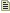
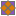
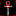
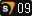
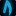
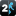
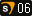
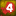
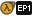
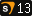

prop_dynamic
Jump to navigation
Jump to search

")
 Tip:If your model is never going to move and/or requires more detailed lighting, consider using prop_static (which is cheaper).
Tip:If your model is never going to move and/or requires more detailed lighting, consider using prop_static (which is cheaper).
| CDynamicProp |
prop_dynamic is a model entity available in all  Source games. It is used to add a model to the world that can animate itself.
Source games. It is used to add a model to the world that can animate itself.

Note:To enforce consistency, models with embedded physics data cannot by default be used byprop_dynamic. Use the Hammer model browser's Info tab to check for support. If you intend to use a physics model in non-physics role, use prop_dynamic_override.{kind=link}
AltNames: This entity is also tied to
dynamic_prop. The classname is always changed to prop_dynamic on spawn. Uses
- Buttons can be created by parenting a
prop_dynamicto a func_button brush. This will cause+useinputs on the prop to be forwarded to the func_button, which can be placed anywhere in the map (or even outside the map, as long as the origin, if present, is inside). TheSetAnimationinput can then be used to make the prop animate when interacted with.
- In

Mapbase, prop_interactable combines these entities, making setup easier. Likewise,
Vampire: The Masquerade – Bloodlines has prop_button.
- In
- Similarly, levers can be created by parenting a
prop_dynamicto a func_rot_button (or momentary_rot_button) brush. No animation is needed for this - the brush will rotate the prop by itself. As before, the entity can be placed anywhere, as long as the origin is positioned at the point you want it to rotate around. - A
prop_dynamiccan be configured to break apart after receiving damage or on cue by using theBreakinput.Note:Health set inside the model will intentionally override health set in Hammer! Use prop_dynamic_override instead if this is an issue.
Keyvalues
- Name (targetname) <string>
- The name that other entities refer to this entity by, via Inputs/Outputs or other keyvalues (e.g.
parentnameortarget).
Also displayed in Hammer's 2D views and Entity Report. - See also: Generic Keyvalues, Inputs and Outputs available to all entities
- Default Animation (DefaultAnim) <string>
- The animation this prop will play when not doing a random or forced animation.
- Randomly Animate (RandomAnimation) <boolean>
- Makes the prop randomly select and play animations at intervals defined by the Min/Max Random Anim Time KVs. In between the random animations, it will revert to playing Default Animation.Note:Will only select from animation $sequences linked with
ACT_IDLEif they exist.
- Min Random Anim Time (MinAnimTime) <float>
- Minimum time between random animations.
- Max Random Anim Time (MaxAnimTime) <float>
- Maximum time between random animations.
- Collisions (solid) <integer choices>
- How the prop should interact with other objects.
- 0 - Not solid
- 2 - Use bounding box
- 6 - Use VPhysics (default)
- Update children (updatechildren) <boolean> (in all games since )
- Update touches for any children that are attached to attachment points as this prop animates. This allows SetParentAttached triggers or func_brushes to touch properly.
- Disable Bone Followers (DisableBoneFollowers) <boolean> (in all games since

) - Disables generation of phys_bone_followers for each convex piece the model has in its collision model.
phys_bone_followers can quickly eat up the edict count, so this keyvalue can be very helpful in freeing resources. This will however make the collision model no longer function (the model will be nonsolid to anything that uses the collision model instead of the hitbox[Elaborate?]). No effect on models which use$collisionmodelinstead of$collisionjoints.Tip:In games where this keyvalue is not available, prop_dynamic_override with collision set to 'Not solid' can be used.
- Hold Animation (HoldAnimation) <boolean> (in all games since

) - If set, the prop will not loop its animation, but hold the last frame.
- Animate Every Frame (AnimateEveryFrame) <boolean> (in all games since

) - Force this prop to animate every frame. Usually this doesn't need to be touched.
- Ignore NPC Collisions (IgnoreNPCCollisions) <choices> (only in )
- Disable collisions for NPCs if yes.
- 0: No
- 1: Yes
BaseFadeProp:
- Start Fade Dist (fademindist) <float>
- Distance at which the entity starts to fade.
- End Fade Dist (fademaxdist) <float>
- Max fade distance at which the entity is visible.
- If start fade is <0, the entity will disappear instantly when end fade is hit.
- If end fade is <0, the entity won't disappear at all. (This is the default behavior.)
- The values will scale appropriately if the entity is in a 3D Skybox.
- Fade Scale (fadescale) <float>
- If you specify so in worldspawn, or if the engine is running below DirectX 8 (DX7 in

), props will fade out even if the fade distances above aren't specified. This value gives you some control over when this happens: numbers smaller than 1 cause the prop to fade out at further distances, while those greater than 1 cause it to fade out at closer distances. Using 0 turns off the forced fade altogether. See also the QC command $noforcedfade.
- Render Mode (rendermode) <byte choices>
- Set a non-standard rendering mode on this entity.
Render Modes Expand
- Render FX (renderfx) <byte choices>
- Various somewhat legacy alpha effects. See render effects.
- Render Amount / Transparency (0–255) (renderamt) <integer 0–255>
- Transparency amount; requires a Render Mode other than Normal. 0 is invisible, 255 is fully visible.
- Render Color (R G B) (rendercolor) <color255>
- Color tint.
Glow:
- Glow State (glowstate) <choices> (only in

) -
- OFF
- +use
- look-at
- ON
- Glow Range (glowrange) <integer> (only in )
- Range at which the glow becomes visible on approach. 0 means always visible.
- Glow Range Min (glowrangemin) <integer> (only in )
- Inner range at which the glow stops being visible on approach. 0 means always visible.
- Glow Color Override (R G B) (glowcolor) <color255> (only in )
- Change the render color of the glow.
BreakableProp:
- Explosion Damage (ExplodeDamage) <float>
- If non-zero, when this entity breaks it will create an explosion that causes the specified amount of damage. See also Explosion Radius.
- Explosion Radius (ExplodeRadius) <float>
- If non-zero, when this entity breaks it will create an explosion with a radius of the specified amount. See also Explosion Damage.
- Sound to make when punted (puntsound) <sound> (in all games since

) - Sound to make when punted by gravity gun.
- Break Model Message (BreakModelMessage) <string> (only in

) - "If set, will use this break model message instead of the normal break behavior."
Breakable (common):
- Performance Mode (PerformanceMode) <choices>
- Used to limit the amount of gibs produced when this entity breaks, for performance reasons.
Choices Expand
- Min Damage to Hurt (minhealthdmg) <integer>
- If a single hit to the object doesn't do at least this much damage, the prop won't take any of the damage it attempted to give.
- Pressure Delay (PressureDelay) <float>
- Seconds to delay breaking from pressure. Allows creaking/groaning sounds to play.
- Health (health) <integer>
- How close to breaking the object is.
- Maximum Health (max_health) <integer>
- Health cannot exceed this amount.
- Physics Impact Damage Scale (physdamagescale) <float>
- Multiplier for damage amount when this entity is hit by a physics object. With a value of 0 the entity will take no damage from physics.
Who can break this? Expand
- World Model (model) <model path>
- The model this entity should appear as. 128-character limit.
- Skin (skin) <integer>
- Some models have multiple skins. This value selects from the index, starting with 0. May be overridden by game code. Tip:Hammer's model browser automatically updates this value if you use it to view different skins.
- Model Scale (modelscale) <float> (in all games since ) (also in )
- A multiplier for the size of the model.
- Tip:In Hammer++ with a prop selected in 3D view, hold Ctrl and scroll the mouse wheel to change the modelscale in increments of 0.5. Holding ⇧ Shift will scale it in smaller increments of 0.05.
- Bodygroup (body / SetBodyGroup) <integer>
- Some models have multiple submodels. This value selects from the index, starting with 0. May be overridden by animations and/or game code. Note:If both
bodyandSetBodyGroupare present (even if set to 0),bodywill be prioritized.
- Lighting Origin (lightingorigin) <targetname>
- Select an entity (not info_lighting!) from which to sample lighting and cubemaps instead of the entity's $illumposition.
Shadow:
- Disable Shadows (disableshadows) <boolean>
- Prevents the entity from creating cheap render-to-texture shadows, or lightmap shadows if the entity is a prop_static. Does not affect shadow mapping.
- Shadow Cast Distance (shadowcastdist) <integer> !FGD
- Sets how far the entity casts dynamic shadows. 0 means default distance from the shadow_control entity.
- Disable Receiving Shadows (disablereceiveshadows) <boolean>
- Prevent the entity from receiving dynamic shadows on itself.
- Disable Shadow Depth (disableshadowdepth) <boolean> (in all games since )
- Used to disable rendering into shadow depth (for projected textures) for this entity.
- Disable flashlight (disableflashlight) <boolean> (in all games since )
- Used to disable projected texture lighting and shadows on this entity.
- Projected Texture Cache (shadowdepthnocache) <integer choices> (in all games since )
- Used to hint projected texture system whether it is sufficient to cache shadow volume of this entity or to force render it every frame instead.
Choices Expand
- Render in Fast Reflections (drawinfastreflection) <boolean> (in all games since )
- If enabled, this entity will render in fast water reflections (i.e. when a water material specifies
$reflectonlymarkedentities) and in the world impostor pass.
GMODSandbox:
- Allow Physics Gun (gmod_allowphysgun) <boolean> (only in )
- If set, players cannot use Physics Gun on this entity.
- Sandbox Tool Whitelist (gmod_allowtools) <string> (only in )
- If set, only given tools can be used on this entity. You need to supply the tool class names, the names of the
.luafiles of those tools. This also includes the context menu properties!
Flags
DynamicProp:
- Use Hitboxes for Renderbox : [64]
- [Elaborate?]
- Start with collision disabled : [256]
BreakableProp:
- Break on Touch : [16]
- Break on Pressure : [32]
- Will break after being stood on for
PressureDelayseconds.Note:Some models will break instantly if this is or isn't set. (e.g.militiawindow02_breakable.mdl,window_industrial.mdl)
Inputs
- SetAnimation <string>
- Forces the prop to play the named animation immediately.
- SetDefaultAnimation <string>
- Changes the animation played when not in a random/forced sequence. New default animations begin when the previous playing animation has ended.
- SetPlaybackRate <float>
- Sets the framerate at which animations are played.
- TurnOff
- Hides the prop through EF_NODRAW. The
Disableinput does the exact same thing.
- TurnOn
- Shows the prop (by removing EF_NODRAW). The
Enableinput does the exact same thing.
- DisableCollision
- Tells the prop to no longer be solid.
- EnableCollision
- Tells the prop to become solid again.
- SetAnimationNoReset <string> (in all games since )
- Force the prop to play an animation unless the prop is already playing the animation. The parameter should be the name of the animation.
- FadeAndKill (in all games since )
- Fade out then remove this prop.
Glow:
BreakableProp:
- Break
- Breaks the breakable.
- SetHealth <integer>
- Sets a new value for the breakable's health. If the breakable's health reaches zero it will break.
- AddHealth <integer>
- Adds health to the breakable.
- RemoveHealth <integer>
- Removes health from the breakable.
- physdamagescale <float>
- Sets Physics Impact Damage Scale. 0 means this feature is disabled for backwards compatibility.
- EnablePhyscannonPickup
- Makes the breakable able to picked up by the gravity gun.
- DisablePhyscannonPickup
- Makes the breakable not able to picked up by the gravity gun.
- EnablePuntSound (in all games since )
- Allow this prop from playing its Punt Sound sound when punted by the gravity gun.
- DisablePuntSound (in all games since )
- Prevent this prop from playing its Punt Sound sound when punted by the gravity gun.
Outputs
- OnAnimationBegun
- !activator = none
!caller = this entity
Fired when an animation begins.
- OnAnimationDone
- !activator = none
!caller = this entity
Fired when an animation finishes.
BreakableProp:
- OnBreak
- !activator = entity that breaks the object
!caller = this entity
Fired when this object breaks.
- OnHealthChanged <float>
- !activator = entity that caused the health change
!caller = this entity
Fired whenever the health of the breakable has increased or decreased. This output automatically puts the new health amount as a decimal percent (e.g. 45% = 0.45) into the parameter box for inputs, if the mapper does not override the parameter with something else. - OnTakeDamage
- !activator = entity that caused the damage
!caller = this entity
Fired when damage is taken. - OnPhysCannonAnimatePreStarted
- !activator = none
!caller = this entity
Fired when prop starts itsACT_PHYSCANNON_ANIMATE_PREactivity. Caused by the object being picked up by the gravity gun.
- OnPhysCannonAnimatePullStarted
- !activator = none
!caller = this entity
Fired when prop has started itsACT_PHYSCANNON_ANIMATEactivity.ACT_PHYSCANNON_ANIMATE_PREplays once, thenACT_PHYSCANNON_ANIMATEstarts looping.
- OnPhysCannonDetach
- !activator = none
!caller = this entity
Fired when prop has started itsACT_PHYSCANNON_DETACHactivity (caused by the gravity gun ripping it from a wall).
- OnPhysCannonAnimatePostStarted
- !activator = none
!caller = this entity
Fired when prop has started itsACT_PHYSCANNON_ANIMATE_POSTactivity (caused by the player letting the prop go from the gravity gun).
- OnPhysCannonPullAnimFinished
- !activator = none
!caller = this entity
Fired when prop has finished all gravity gun-related animations.